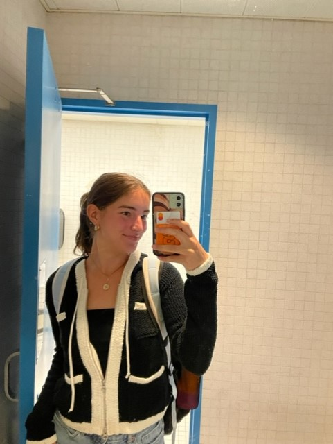
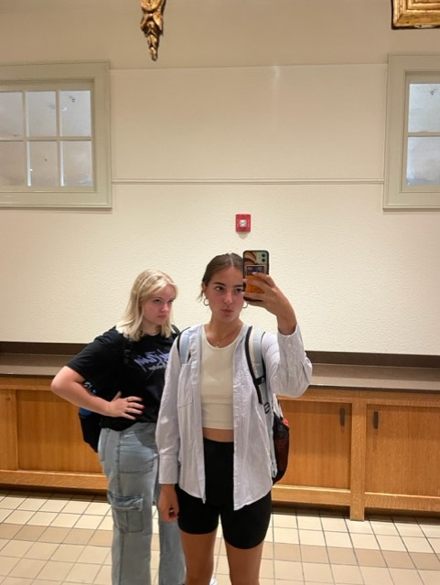

Look no further! I can’t tell you how many times I’ve raided my own closet (and my roommates’) for something to wear to class. A fun outfit can make the difference in being motivated to do well in classes and get work done, but during a long day of classes, one thing becomes clear – comfort is key! Here are some simple tricks and bouts of inspiration that will help you choose an outfit for classes, even on the earliest of 8:00 a.m. occasions.
Though oftentimes a “cute” outfit is synonymous with unique, special, or out of the box clothing choices, sometimes learning how to elevate the more basic aspects of your wardrobe becomes key in an everyday look. In the early mornings when looking cute or making breakfast becomes a choice as you rush out the door, opt for simplicity. A classic baby-tee, graphic tee, or cozy sweater will always look great with baggy, non-ripped jeans. Throw on your favorite sneakers, boots, or sometimes in Syracuse’s case, winter boots, and go run to class before you’re late! If you have extra time, you can always accessorize with fun hair clips, a statement belt, or jewelry.
 To add a personalized touch to an outfit built up of elevated basics, accessorizing is going to take your class outfits to the next level. One of my personal favorite accessories to pair with a classic jeans and sweater look is a hair bow! Order a roll of ribbon from Amazon, or run to your local craft store, and tie in a ribbon to a ponytail or braids. Doing so will add a unique and playful vibe to any outfit.
One of the ultimate ways to look put together while remaining comfortable is opting for a matching set. To add some seasonal flair, a fuzzy sweater and matching fuzzy pants (sets available on Amazon or from Skims) are a cute and practical combination. Pairing this with sneakers or Uggs makes for an outfit that can be worn through both a long day of studying and an after-class nap.
Ultimately, looking cute for class is not an unachievable feat. Really, it is easier than many think. Getting in the mindset to get yourself ready and looking your best for the day ahead has the power to make days more productive, as well as lift the mood for when school days become monotonous. Try implementing special style tricks into your day-to-day life to feel happier and stand out on campus!